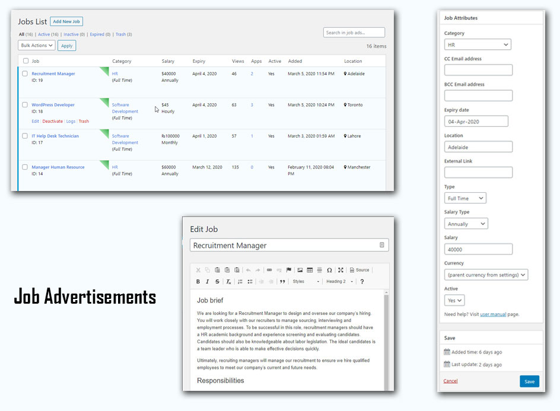
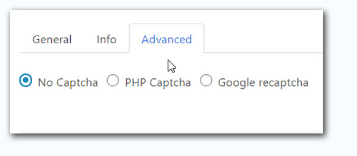
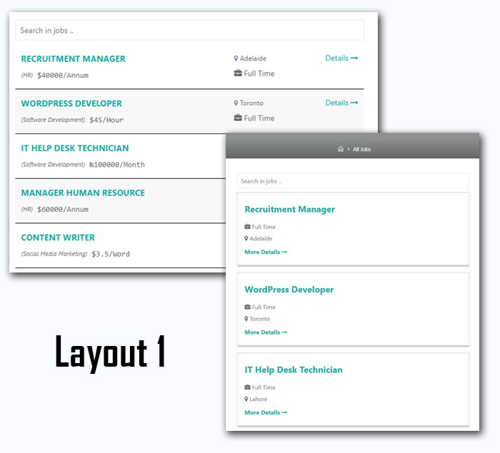

We developed this plugin after carefully analyzing the needs of our clients across the globe. It will single-handedly reduce a great deal of extra time spent on recruitment.

Want your client or a colleague to receive an email every time a new application is submitted?Use our cc and bcc function to email application details to your clients and colleagues.
Use different currency symbols on different job openings.We understand that some of you will have offices across different continents and keeping that in mind we have given you the power to choose different currency symbols for different job ads.
Want applicants/candidates to apply for the job at a different website?Sure thing. While adding a new job opening, just enter the link where the applicant should land when they click on the apply button.
(If the external link field is empty, then a job form will appear when an applicant clicks on the apply button)
Would you like your applicants to see a certain name and email address when they receive an email from you?No worries! On the settings page, we have given you the option to write the name and email address which should appear when you send emails to the applicants. The plugin will then start sending emails using that name and email.
Don’t want to give the HR guy access to your entire site?No issue at all. Add a new user and assign him the SA Job HR role. This user will only have access to the jobs plugin, not the entire site.
Tired of spam?Choose between two captcha options (Google ReCaptcha and PHP captcha) available on our plugin to tackle this problem.

Managing job applications would no longer feel like a daunting taskAll the applications will be saved in the back-end of your site. Perform numerous actions on the job applications that you have received. We have listed out the actions you can perform below.
Our goal is to make things simple and easy for our users. You have been given the option to perform bulk actions across the board. The bulk actions you can perform under each section are as follows:
You’d be able to add notes and see if a particular job application was viewed or someone took any action on it. You also have the option to see which job ad was created by which user and if someone edited any job ad.
Users can automatically delete job applications after a set number of days. Just go to settings and choose how many days you’d like to keep an application saved with you. The plugin will start counting the days from the day when an application was submitted. If you don’t wish to automatically delete any application, then choose never.
Choose between two eye-catching layout designs.


A user-manual has been designed for the ease of our user-base. All the steps related to using this plugin like installation, setting up job listings page, posting job ads, adding and deleting categories, using email templates, viewing job applications and the use of shortcodes have been mentioned there.
Key features